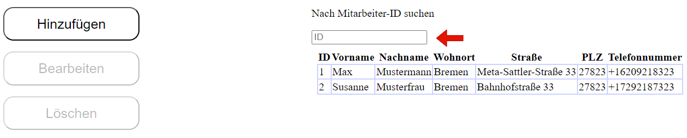
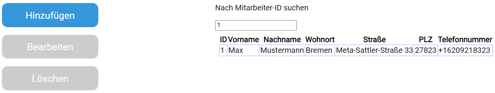
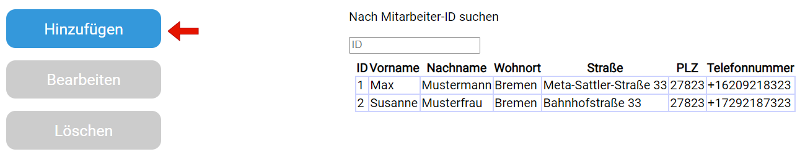
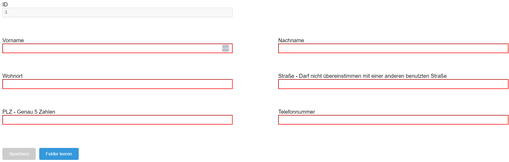
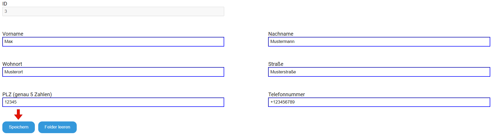
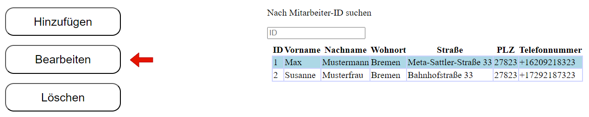
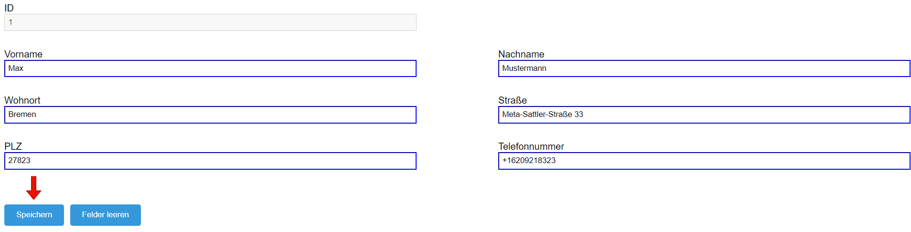
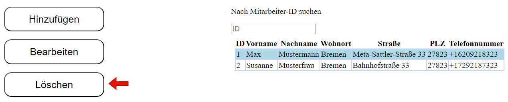

Zur Startseite navigieren
SCREENSHOTS EINFÜGEN
Nach einem Mitarbeiter in der Tabelle suchen
ID des gesuchten Mitarbeiters in der Suchleiste eingeben.
Die Daten des eingegebenen Mitarbeiters werden anstelle der Tabelle ausgegeben,
sollte kein Mitarbeiter mit der angegebenen ID existieren wird nichts ausgegeben.
Neuen Mitarbeiter hinzufügen
Auf den Knopf "Hinzufügen" drücken.
Daten des Mitarbeiters eintragen.
Anschließend auf den Knopf "Speichern" drücken,
der neu hinzugefügte Mitarbeiter wird nun in der Tabelle auf der Startseite angezeigt.
Mitarbeiter bearbeiten
Mitarbeiter aus der Tabelle auswählen, anschließend auf den Knopf "Bearbeiten" drücken
Die Felder werden automatisch mit den Daten des ausgewählten Mitarbeiters aus der Tabelle befüllt.
Mitarbeiter löschen
Mitarbeiter aus der Tabelle auswählen, anschließend auf den Knopf "Löschen" drücken